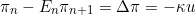
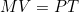
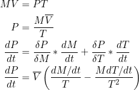
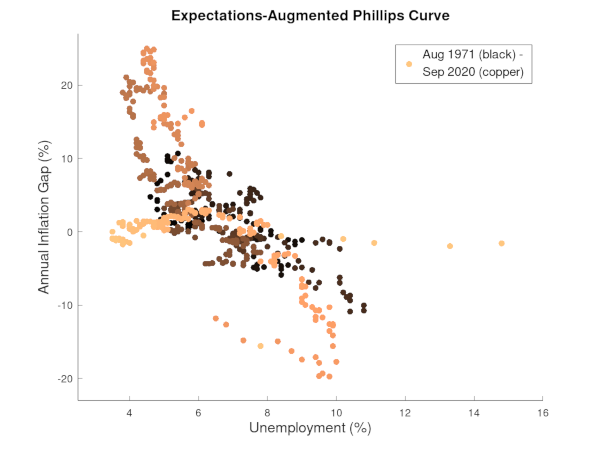
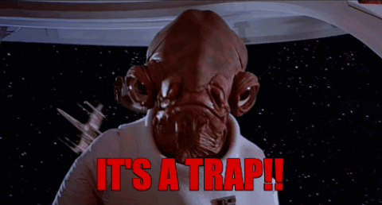
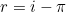
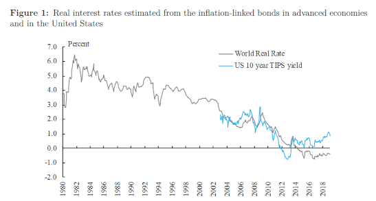
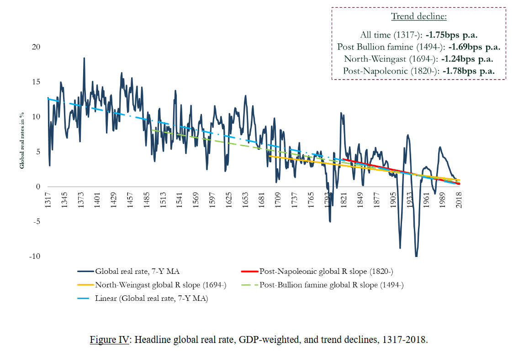

Duel Mandate: The Irony and Inequity of the Federal Reserve System

Central Bankers in and out of Government have more responsibilies and worries in recent years than ever before. Have any of these recent macroeconomic trends provided a natural experiment for New Keynesianism, Monetarism, or Real Business Cycle theory?
- The Phillips Curve is Dead
- Inflation Inertia (Long Live the Phillips Curve)
- Nominal Interest Rates and the Liquidity Trap
- Real Interest Rates and Secular Stagnation
- the long-term decline in real interest rates
- a general rise in inequality over recent decades
- (A)Historic Discrection of the Dual Mandate
This article is a monetarist critique of the discretionary power and discretionary policies of the Federal Reserve and new-Keynesian economics. It is also a surprisingly positive prediction of future trends, especially with regard to a slowing down of the growth of wealth inequality.
The inspiration for this article was real estate prices.
1. The Phillips Curve is Dead
The Phillips curve is the observed inverse correlation between unemployment and inflation, an academic observation on which the Federal Reserve's mandate is partially based. However its primacy as a policy tool has been reduced since the 1970s due to the observed correlation becoming unstable and due to a critique by Friedman and Phelps that inflation expectations, affect actual inflation.
No stable curve is clear in a simple CPI based Phillips scatterplot; in the darker points (months) from the 1970s-1990s it looks much more like a random cloud than a curve. Additionally, in the 2000s the Phillips curve appeared to flatten as inflation stayed low, prompting significant concern and research amoung public servents and economists.

The concern is two-fold, can a flat Phillips curve still be used for adjusting the unemployment rate in recessions, and have any other misunderstandings—besides the lack of expectations critiqued by Friedman—caused the Federal Reserve to conduct counterproductive or harmful policy?
The new-Keynesian, expectation-augmented Phillips curve is presented well in this talk on Is the Philips Curve Getting Flatter? In the equation π is actual inflation rate, Eπ the expected inflation, and -κu basically the old Keynesian Phillips curve (a slope × unemployment rate).
In this and much contemporary research, graphs like the one below are very popular, the idea being that inflation is self-fulfilling: if the Federal Reserve can convince us of its competance at achieving a certain inflation rate, that in and of itself will help make it true. This seems possible but also a very political idea. Here is their graph:

This self-fulfilling "anchoring" of inflation expectations shares a common theme with most Keynesian theories, that the people produce psychological, positive feedback loops that must be actively managed by a competent authority, in this case for inflation. For example, consider Chairman Bernanke's speech on anchoring low inflation expectations in 2007:
...Notably, the sharp increases in energy prices over the past few years have not led either to persistent inflation or to a recession, in contrast (for example) to the U.S. experience of the 1970s.
Various factors might account for these changes in the Phillips curve, but, as Mishkin pointed out, better-anchored inflation expectations—themselves, of course, the product of monetary policies that brought inflation down and have kept it relatively stable--certainly play some role.
Really?
2. Inflation Inertia (Long Live the Phillips Curve)
Many have been surprised by the apparent success of "anchored" low inflation expectations, with inflation even persisiting below the Federal Reserves's target rate of 2% (why 2%?). However this "anchor" is actually forecastable with a simple monetary-based rule.
In Why Do We Think that Inflation Expectations Matter for Inflation?, Mr. Rudd finds that, if "the 'true' inflation equation has a role for short-run expected inflation" and assuming a particular inflation forcasting rule, then: "the expectation of long-run inflation in this sort of world will likely be self-fullfilling: with a zero unemployment gap and no supply shocks, actual average inflation will equal the long-run mean obtained from the inflation forcasting rule."
Take the Monetarism tautology money supply (M), times "velocity of money" (V), equals the average price level (P) of goods and services, times the number of transactions (T) in the economy, where velocity is defined in terms of the other variables but intuitively is sort of like the size of your rainy day fund in the bank.
Next, assume velocity remains constant and then derive an equation for expected change in average price levels.
This is not very useful, but further assuming the number of transactions in the economy scales only with population size, i.e. everyone continues to conduct the same distribution of transactions in size and quantity, then several substitutions can be made to rewrite this equation in terms for which there is publically available data. Let Eπ be the monetary inflation rate, Qrt the population growth rate, and Gdp gross domestic product.

Thus with two assumptions, expected inflation is a function of the quantity of money (M) and population growth rate (Qrt). Although neither assumuption of constant velocity nor [T ∝ population] is necessarily true, the errors produced by both are at least bounded to a particular data point period because the equation is based on a derivative; no integration of inflation (or errors) over time.
Somewhat more difficult is choosing an appropriate measure of the money supply, which has been the main critique of Monetarism.
However, if we narrowly define the money supply as being the expected long-term money supply (for expected long term inflation), we can conclude that even with an "independent" Federal Reserve, the Federal Government can still "print money" by deficit spending. The logic being the government, unlike people, does not age and will never have to pay off its total debt load as long as potential tax revenue scales somewhat proportionally. Conversly, as more deficit dollars are provided to the people, the overall prices will rise for a given amount of real economic activity, thus increasing potential tax revenue.
Since this narrow definition of the long term money supply is based on the number of dollars available to the people of the country, it must also be adjusted for trade surpluses and deficits.

How well does this long term money supply and its predicted long term inflation fit the recent experience of the United States?
At first glance, not very well. There are multiple times where actual inflation leads the predicted inflation in the 1970s and 1980s and the predictions of the 1990s and 2000s appear wildly off. But after 2013 the prediction appears suddenly very accurate.

This shift toward long-term predicted inflation in 2013 is likely due to a series of real supply and demand shocks having finally working their way through the economy, in particular leaving the gold standard (1971), oil shocks (1973, 1979, 1990), billateral trade with China (1979), NAFTA (1994), other trade agreements, the computer revolution, and many interest rate changes.
If this were true, one would expect a strong Phillips curve relationship (slope -κ) during the period of supply and demand shocks, as inflation absorbed a portion of real price changes in the economy, and a flat curve after employment prices reached a new equilibrium with goods and services.
The graph below plots the observed new-Keynesian Phillips curve, but with expected inflation for the period (Eπ) calculated from the long term expected monetary inflation described above instead of professional prediction surveys; instead of plotting a output gap, it plots an inflation gap (Δπ = CPI - Eπ).

Indeed, comparing the simple CPI Phillips curve from above vs. the CPI and predicted long term inflation gap produces a much steeper, more stable correlation between inflation and unemployment during periods attributable to economic shocks and a dramatic flattening after 2013.

The Phillips curve is dead, long live the Phillips curve! Monetarism is dead, long live Monetarism!
3. Nominal Interest Rates and the Liquidity Trap
New-Keynesian economics is supposed to be countercyclical; the point of having a bureaucrat in charge is to dampen economic cylces, making recessions less severe and expansions less booming/speculative; when a recession begins, the central bank can lower interest rates to encourage more loans startup more economic investment and construction.
Unfortunately, this aspect of New-Keynesian economics is scientifically true in the sense that it has never fully been tested. The graph below shows that over all six of the last six cycles, and especially the last four, the Federal Reserve has never succeeded in returning interest rates to their previous level during the good times.

Since the Great Recession, interest rates have been approaching the "zero lower bound" (ZLB), which restricts the Federal Reserve's ability to further lower interest rates during Covid 19 and future crises.
New-Keynesian economists call this a liquidity trap, as defined by Keynes himself:
There is the possibility...that, after the rate of interest has fallen to a certain level, liquidity-preference may become virtually absolute in the sense that almost everyone prefers cash to holding a debt which yields so low a rate of interest. In this event the monetary authority would have lost effective control over the rate of interest. But whilst this limiting case might become practically important in future, I know of no example of it hitherto.
4. Real Interest Rates and Secular Stagnation
Real interest rates, r, are defined by the Fisher equation, where i is the nominal interest rate for banks to borrow money from the Federal Reserve and π is inflation.
A second monetarist critique of "anchored" inflation expectations, can be made with a simple assertion: with a currency debased from any physical commodity, like gold, and instead based on an abstract commodity, natural numbers, the natural real interest rate is zero. Compare the graph used to make the case for inflation expectations with a graph of nominal interest rates:
As we have seen, the Federal Reserve has consistently failed to restore nominal interest rates to the prior level during times of economic expansion. If the natural (long run) real interest rate were zero, then the Federal Reserve's policies alone would account for the low inflation—ironically stable prices!
However, new-Keynesians would counter this assertion with two arguments:
- Taylor rule: central banks tend to raise interest rates to counter inflation, or lower interest rates to counter recessions (which have low inflation), so the correlation between interest rates and inflation is caused by central bank policy, not a result.
- Secular Stagnation: the natural real interest rate r* is not constant and has been declining for at least four decades.
I do not have a good rebuttal to the Taylor rule, except to say that it would be ironic if an activist economic philosophy based on dampening the animal spirits of the people was promulgating its own positive feedback loop on inflation.
Secular Stagnation, as used by economist today, describes the long term fall in real interest rates and its potential causes and effects. The following graph is from a paper by Lukasz Rachel and Lawrence Summers:
To combat secular stagnation, Rachel and Summers argue for larger budget deficits and increased fiscal programs such as pay-as-you-go old age pensions and government health care programs to raise neutral real rates. However a compelling reason to combat secular "stagnation" is unclear, Laubach and Williams, of the LW natural real interest rate model suggest:
Since the start of the Great Recession, the estimated natural rate of interest fell sharply and shows no sign of recovering. These results are robust to alternative model specifications. If the natural rate remains low, future episodes of hitting the zero lower bound are likely to be frequent and long-lasting.
I.e. the motivation to avoid natural real interest rates lowering to zero is that the government would have to be more responsible during good times in order to stimulate the economy with monetary policy during recessions. Not very compelling.
It is the hight of irony that the new-Keynesian solution to activist interest rate looseness becoming ineffective due to overuse is a more activist fiscal looseness by the Feds. But lets not stop there, it is also deeply ironic for those of gold-bug disposition (myself inclued), that formally leaving the gold standard finally gave the Federal Reserve enough room to make its own policies ineffective.
Finally, there is some empirical evidence for the assertion that the long run natural real interest rate is zero, consider this graph from Paul Schmelzing in Eight centuries of global real interest rates, R-G, and the ‘suprasecular’ decline 1311-2018:
Ahistorical Discretion of the Dual Mandate
The Constitution says the Congress shall have power:
- To borrow money on the credit of the United States;
- To coin money, regulate the value thereof, and of foreign coin, and fix the standard of weights and measures;
- No money shall be drawn from the Treasury, but in consequence of appropriations made by law; and a regular statement and account of the receipts and expenditures of all public money shall be published from time to time.
- No state shall enter into any treaty, alliance, or confederation; grantletters of marque and reprisal; coin money; emit bills of credit; make anything but gold and silver coin a tender in payment of debts; pass any bill of attainder, ex post facto law, or law impairing the obligation of contracts, or grant any Title of Nobility.
The gold standard was broken by executive order by FDR in 1933 and ended by Nixon in 1971 (a bipartisan affair). At each instance, Congress and the Surpreme Court conceded to the executive these changes. One can argue this breaking-change leadership was necessary given the circumstances or that it was an inevitable result of advances in economics, as Keynesians or Monetarist might, but the spirit of the constitution where monetary policy was subject to more constraints that the whims of bureaucrats was never properly ammended.
The current mandate of the Federal Reserve from Congress directs:
The Board of Governors of the Federal Reserve System and the Federal Open Market Committee shall maintain long run growth of the monetary and credit aggregates commensurate with the economy's long run potential to increase production, so as to promote effectively the goals of maximum employment, stable prices, and moderate long-term interest rates.
Ironically, this tripartite instruction has come to be known as the dual mandate, i.e. stable prices and maximum sustainable employment.
This faux pas is likely due to the prominance of the Phillips curve and IS-LM model in macro economics and their predictions of tradeoffs between inflation and GDP (Phillips curve) and GDP and interest (LM Curve). Interest rates are seen as a policy variable to adjust these relationships, but virtually ignored is any correlation between interest rates and inequality.